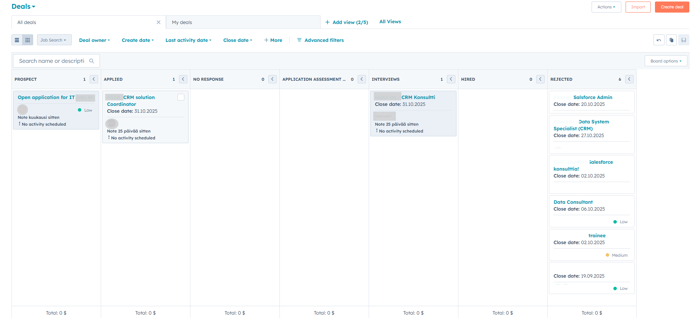

This project demonstrates basic job search tracking solution in HubSpot using deals and workflows. It helps manage applications, follow-ups, and outcomes. The purpose was to make job search easier to follow and analyze application stages and companies responsiveness. It also supports job seeker in staying focused, do better research on potential employers, and avoid losing track of ongoing applications.
Job search pipeline consists of 7 stages:

There are 2 workflows created to automate the job application process. The first workflow moves deals from "Applied" to "No Response" when there’s no reply within a set time. The second workflow moves deals from "No Response" to Lost opportunity when there’s still no activity after another period.
Objective: Automating the follow up process and reduce manual updates.
Purpose: Making job search more efficient and easier to follow up on active deals. This helps with focusing on active application and not lose track on relevant opportunities. At the same time, lost opportunities are automatically marked and moved, keeping the pipeline clean and ensuring that reports always reflect the most accurate status of my job search.
Logic: Deals in the Applied stage with "Application Deadline" older than 14 days or "Creation Date" older than 30 days will automatically moved to No Response.
Logic: Deals in the No Response stage with no activity for more than 14 days s will automatically moved to Rejected stage = Lost deal.
By implementing a simple structured pipeline and workflows in HubSpot, job search activities became more structured and easier to manage. This system allows to track applications, follow up at the right time, and keep a clear view of which opportunities are active or not. It also provides a reliable way to analyze responses and outcomes, supporting informed decisions throughout the process.